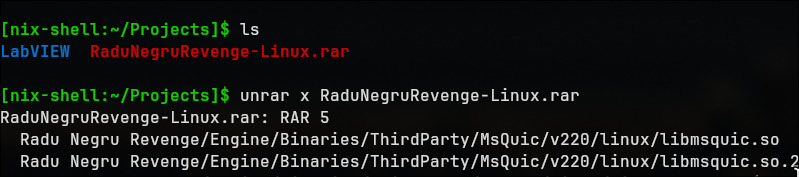
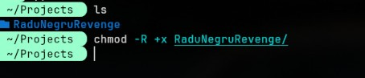
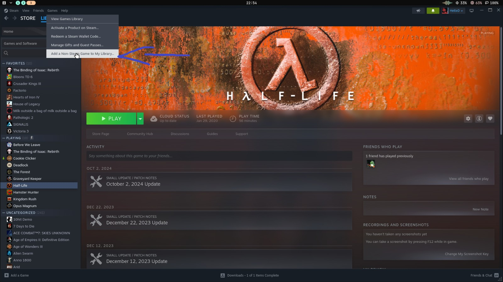
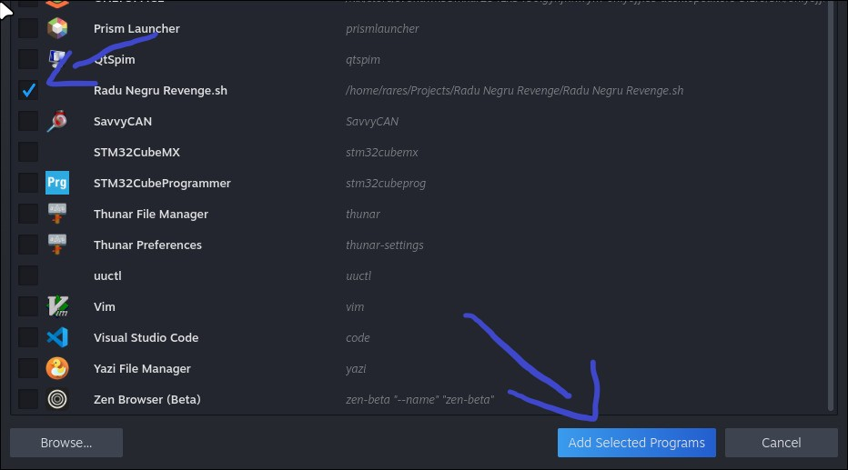
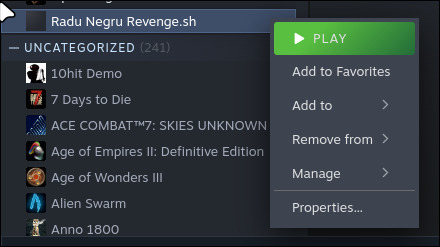
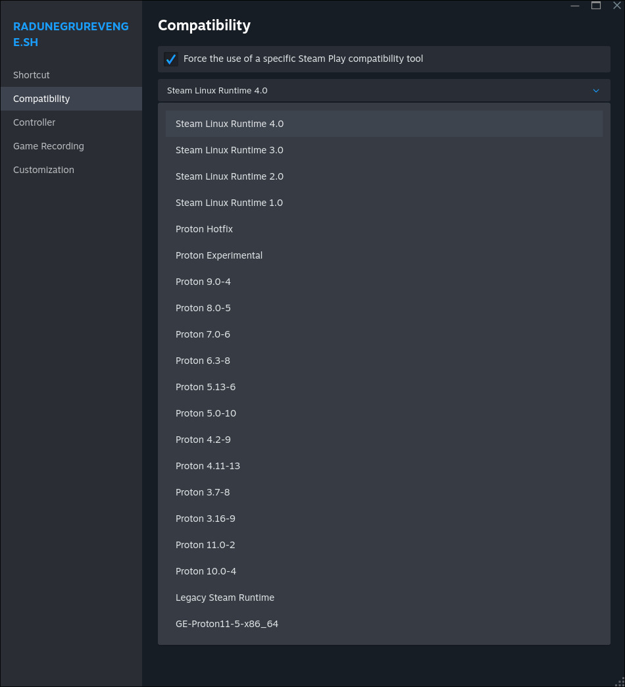
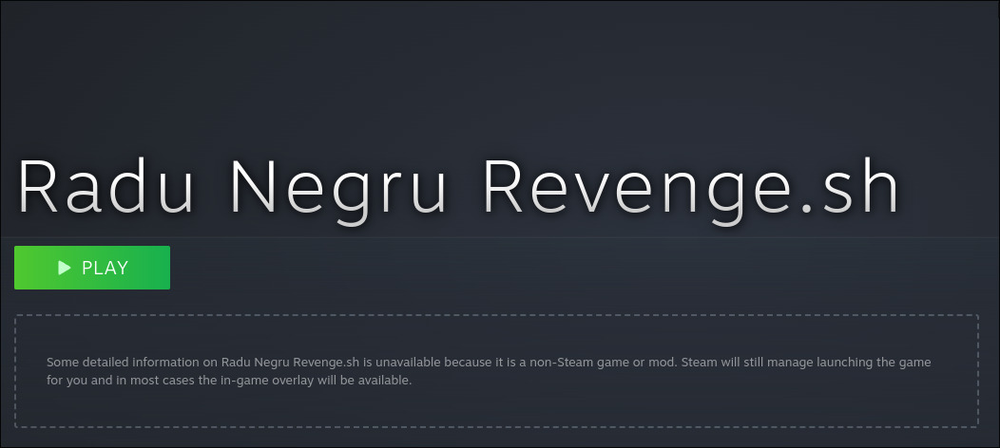

Radu Negru Revenge / Installation guide
Install on Linux
Your download should start automatically. Follow the steps below to get the game running.
Linux download
Preparing your download…
Installation steps
Step 01
Dezarhiveaza

Step 02
Schimba permisiunile

Step 03
Du-te in steam -> Games -> Add a non-Steam game

Step 04
Selecteaza .sh extras -> Add Selected Programs

Step 05
Click dreapta -> Properties

Step 06
Compatibility -> Force the use of a specific... -> Steam Linux Runtime 4.0

Step 07
Dupa doar apasa play
